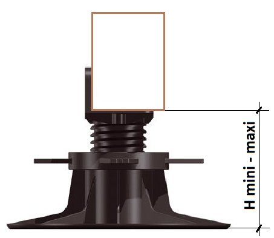

La base
Les plots réglables
Sur un terrain irrégulier ou sur une chape, les plots portent les lambourdes et isolent votre structure bois des remontées d’humidité. Robustes (1 tonne par plot), ils résistent au froid et au gel.
- Plusieurs modèles selon la hauteur à compenser.
- Pose directe sur chape : des cales isolantes de 8 mm.
- Sur herbe, gravier ou sable : un film géotextile empêche l’herbe de pousser.
- Un plot tous les mètres sous les lambourdes : comptez en moyenne 3,5 à 4 plots par m².
Vendus à l’unité
Vous prenez juste ce qu’il vous faut, et vous complétez si besoin.Voir les plots
Vous prenez juste ce qu’il vous faut, et vous complétez si besoin.Voir les plots
